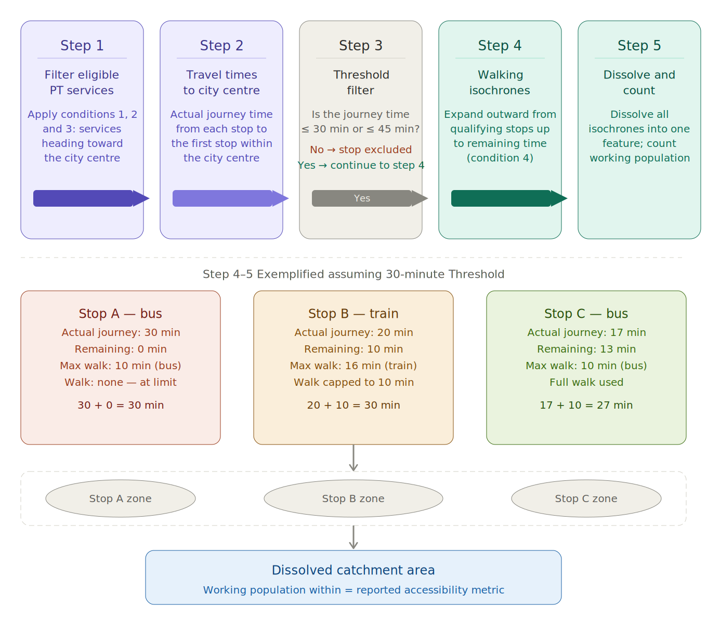
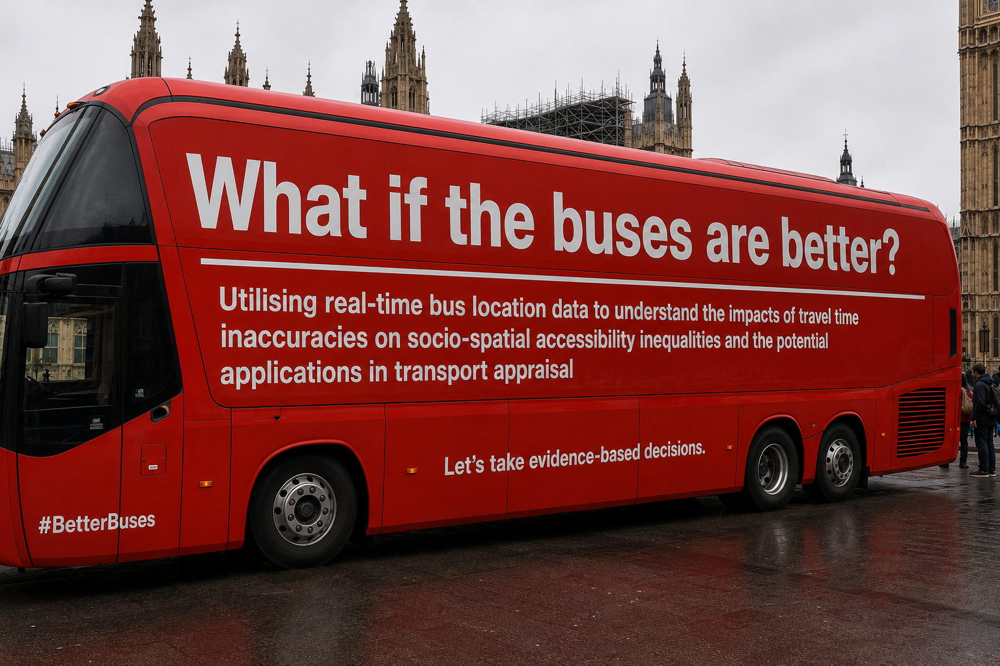

The dissertation programme for MSc Urban Spatial Science, as of 2025/2026 AY, has an opportunity for candidates to take up partner/staff
projects on top of proposing an original research idea (although everyone was also required to think of one original idea in case that they
were unable to get allocated to any partner/staff projects).
I have successfully applied for a partner project, and it is with the
Centre for Cities (CfC), an urban-focused think tank based in London that looks at
urban issues related to British cities (sounds a lot like the British version of UofT School of Cities, eh? 🤣). My CASA supervisors are
Esra Suel and Clara Peiret-Garcia, while my CfC supervisor is Rob Johnson.
Essentially, this dissertation aims to be an extension of a recently-published work by the CfC that looks at how several large British cities outside of London may stand to benefit ECONOMICALLY if they could improve their local public transport provision. The metric is based on how many of the cities' working population could have a 'reasonable' journey to their respective city centres based on the actual time taken by public transport. The focus on city centres is because they were building on one of their previous works (that I will have to do a Lit Review on it, fairly soon!) which found that in the post-COVID environment, the most productive sector -- the knowledge services sector -- is strongly concentrated in city centres. If more people could get to these places, it meant that more people could directly or indirectly partake in, and benefit from, this highly productive sector. This in turn benefits the cities economically. The baseline conditions for a 'reasonable' journey are as follows:
They compared how this metric, based on the baseline conditions, would change if the public transport provision could be improved these three ways
The outcome of this research has also been visualised by CfC, click on the image below!
Why? The CfC research uses actual bus travel journeys to generate their findings. This already puts it apart from current
literature because most research uses scheduled bus travel journeys instead. Actual bus travel journeys always take longer than scheduled, but by how
much? This is already an expansion that has been identified by CfC and CASA for the candidate (ergo, me) to look into for the dissertation project,
thus informing the first and second inquiry lines.
It is also standard across most literature that I have seen to report public transport accessibility based on how much of the population lives within
a certain amount of travel time to a point. However, just because you happen to live in a location that is 30 or 45 minutes away from the city centre does
not necessarily mean that you will work at the city centre. Similarly, just because you live more than 45 minutes away from the city centre does not
necessarily mean that you don't work at the city centre. I thought that accessibility analysis should also be coupled with data about actual travel
demand!
Additionally, I am starting this work fresh after completing the final coursework for
CASA0002: Urban Simulation, where I was
introduced to Origin-Destination (OD) matrix and Spatial Interaction Models. Basically, the former conveys information about where people start
and end their journeys in a matrix (essentially a data about flows of people across space), and the latter is a tool that uses data from the former to
predict changes in these flows based on changes at the origin, destination, or with the journeys between the two places.
Putting them together, what if we amend the metric for the baseline condition based on the OD matrix instead of getting the total number of working
adults who may live within the isochrones? Doing so will provide us with a picture of
how many people who ACTUALLY takes that 'reasonable' journey to the city centre (Inquiry 1) and how many people SHOULD HAVE BEEN able to take
that 'reasonable' journey (Inquiries 2 and 3). Furthermore, we can use Spatial Interaction Modelling to predict
what could ACTUALLY happen to the flows towards city centre - or maybe across the city region - if the three aforementioned improvements take
place (Inquiry 4).
As of today, I have yet to formulate a central research question to connect these four inquiries...
I took a fairly long break from my dissertation because I went to Switzerland for
Ice Hockey World Championships and was rudely welcomed by
a week-long heatwave upon my return to London. But before I left, I
was able to have my first in-person meeting with Rob at the CfC office on Monday (May 18) and consultations with Esra and Clara on Tuesday (May 19).
That meant that the dissertation was still somehow lingering at the back of my mind as I cheered for Team Canada and suffered through the heatwave
🫠.

I asked Claude to create this flowchart of how I understood CfC's methodology after clarification
Secondly, Rob and I discussed about the OD Matrix Woes (see my ramblings on this). One
of the solutions he proposed as of now is to actually use one of the counterfactuals produced by ONS assuming pre-COVID commuting patterns considering
that the Locomizer data was still during COVID and I have yet to get access to the Huq data. I offered to do a sanity check of that dataset with
the post-COVID travel diary survey from Greater Manchester and likely from Greater London too, to
see if at least the data matches/falls in the same ballpark at the regional level. I am exploring to use Pearson's correlation to do this comparison
and I will update more in the OD Matrix page! However, that means that the validity is only checked at specific regions, and if I were to expand to
other cities like Bristol or Nottingham, we would be assuming that the counterfactual data is representative of those regions too without any checks.
Thirdly, Rob shared the private Github repo that CfC relied on to create their report. This crucially has the data on the city centre boundaries, which
will supplement the quick-and-dirty accessibility analysis that I have already produced. I
also found that CfC did their analysis in R, and I will have to make a decision on whether I want to continue my dissertation work in Python or convert
to R (or maybe do both!)
It is exactly two weeks since I last updated this diary. Officially I am at an impasse. To be honest, after updating the boundaries, I had made a lot of
progress but it was a lot of one-step-forward-two-step-backwards kinda situation.
At first I thought that once I had the boundaries settled and the pipelines to build retrospective GTFS for buses ready, all I needed
was to pull in the scheduled GTFS for rail. This is the first roadblock - there's no archive of historical scheduled GTFS for rail anywhere. When I
pulled the rail timetable from Network Rail, that schedule is valid up until May 17, 2026. That's seven months after September 17,
2025 - the date that I have been using to do the quick-and-dirty analysis. So I need to
find another suitable date that falls AFTER May 17 to rebuild the retrospective bus GTFS data in order the to be in sync with the rail GTFS timetable.
Choosing an alternative date is a small issue in my larger scheme of things, so I initially chose June 3 and moved on to the r5py analysis stage to
model travel times based on scheduled and actual service patterns on all three cities of Manchester, Nottingham and Bristol. I had another small
dilemma here because my original method of choosing bus stop-to-bus stop to generate the travel times from each MSOA to city centre turned out to be
extremely time consuming. Using the population centroid at MSOA level was ruled out because a sidetrack experimental run I did in May resulted in
an MSOA in Manchester with no travel time modelled because the centroid happened to be so far off the road network that r5py could not model it. I did
not know why but the solution was quite simple - use population centroid at LSOA level, then generate travel times, then just get the median for the
entire MSOA. Even if one of the LSOA population centroids are not snapped to the road network, the other centroids could provide the values for the MSOA.
Eventually, it is not bus stop-to-bus stop travel times but LSOA centroids-to-bus stop travel times, and it has improved the processing times on Python
by sixfold!
The r5py analysis stage is important because it is the base for the cost matrix for my SIM to predict what happens to commuting patterns to city centre
after different types of service improvements. This is where the third issue came in - what kind of SIM do I use. Initially I thought that since I have
fairly absolute numbers about how many people live in the MSOAs, and how many jobs in the city centre, and since what is being changed is the travel
process and the cost matrices -- the right SIM should have been a doubly-constrained one. However, this is useful if only I have data breakdown of how
many people travel on public transport to work vis-a-vis other transport modes. By virtue of me
choosing the Locomizer Nov 2021 Mobile Phone Dataset, I do not have that. So, the
thing that I can observe by 'changes in commuting patterns' through SIM won't be 'how many more people take public transport to work at the city centre
due to the improvements', but rather 'how many more people could be attracted to work in the city centre due to the improvements'. This has changed my
dissertation to a question about job demand/labour force supply and how the poor bus service provision in the three cities may suppress this. That meant
that my suitable SIM should be an origin/production-constrained model, where the total number of outflows from each MSOA remains the same as in the
'baseline' OD data, but the sum of inflows could change. That change is the amount of suppressed demand that could be unlocked due to the improvements.
Now this is where I run into the fourth dilemma. Those of you who would have dealt with SIM before would know that it requires multiple destination. If
you have a production-constrained SIM but only one destination, what exactly would change to the flows even if the cost matrix/destination weights are
amended? That is where I consulted Claude while activating the 'Research' function, which gave me a fairly complicated answer that I still do not
understand till now. What I got was that I am no longer doing a conventional production-constrained SIM, I am doing an accessibility metric of each MSOA
to the city centre because limiting it to one destinations massively simplifies the gravity formula. It suggested that after I calculated this metric, I
should do a proper production-constrained SIM with two to three alternative employment centres in each city for sanity checking. If I'm going to
do a full proper SIM with several alternative destinations anyway, I might as well incorporate it into the original workflow and measure how the
suppressed labour force supply to the city centre could be unlocked in light of the competing destinations in the different improvement scenarios. But
then, how to select the alternative destinations? That put me right back to the drawing board with defining boundaries again. I tentatively
decided to use BRES data and select the top two MSOAs from each city that does not overlap with the city centre as the two alternative destinations and
run the production-constrained SIM accordingly.
That got me into my fifth dilemma, which is where I am right now. With the retrospective and scheduled GTFS datasets on buses (coupled with the
scheduled GTFS datasets on trams and rail), I can generate the actual median travel times, with the baseline criteria of only using one public
transport journey, and use it to calibrate the SIM. I can then swap out the cost matrix with median travel times based on scheduled datasets (what if
the buses actually run on time, how much of the suppressed supply could be unlocked), and based on allowing for multimodal journeys (what if I can
take the bus AND train because the ticketing is integrated, using the scheduled rail GTFS and retrospective bus GTFS together). But what about the other
two scenarios that CfC has explored in their paper?
Basically, I am at the point where the large theoretical steps are in place. And the base codes are somewhat ready. But there are several methodological decisions that I need to make, especially with the fourth and fifth dilemmas, that needs to be supported by literature. I have, at this point, exhausted all the things I could possibly do WITHOUT doing a proper literature review. Now I need to face the demon that I have been delaying for so long, and I need to do the boring part of reading through everything...
Once again I have been as diligent as I had hoped to be in updating this model. Truth is, I have been doing some progress on the coding front while keeping up with the World Cup as well, so the time that I would have used to update the model I actually spent on watching football. Hey, it's once every four years! ⚽ What I can confidently report is that by and large, the coding works and I have some results that I can show. It has been presented at a mini conference organised by my faculty on July 14th, and you can view the slides below!

Hyperlink to the slides that I presented at 2026 CASA Mini ConferenceI guess to an extent I have finalised on a research question:
The following section is intended to be my first draft for the 'Introduction' section of my dissertation! As of now, the in-text citation is in APA 7
and I will edit it later to conform to Harvard citation style as is required for my submission.